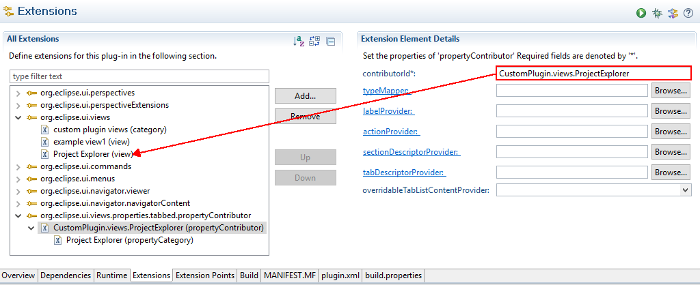
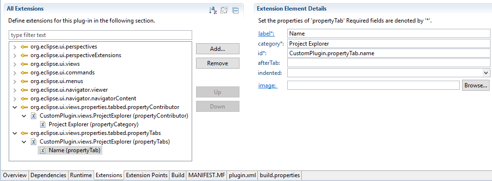
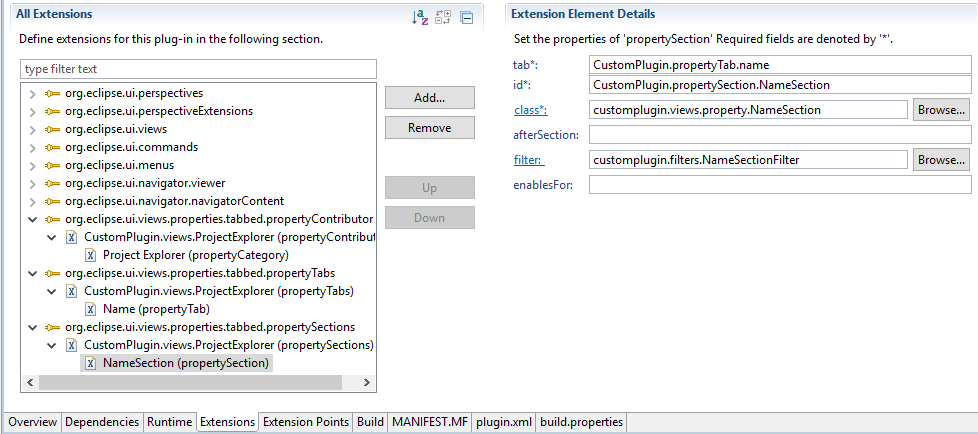
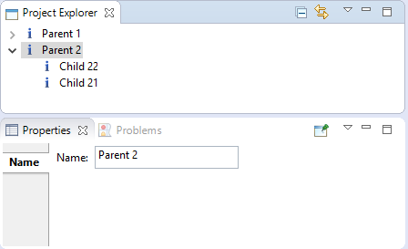
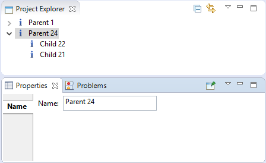
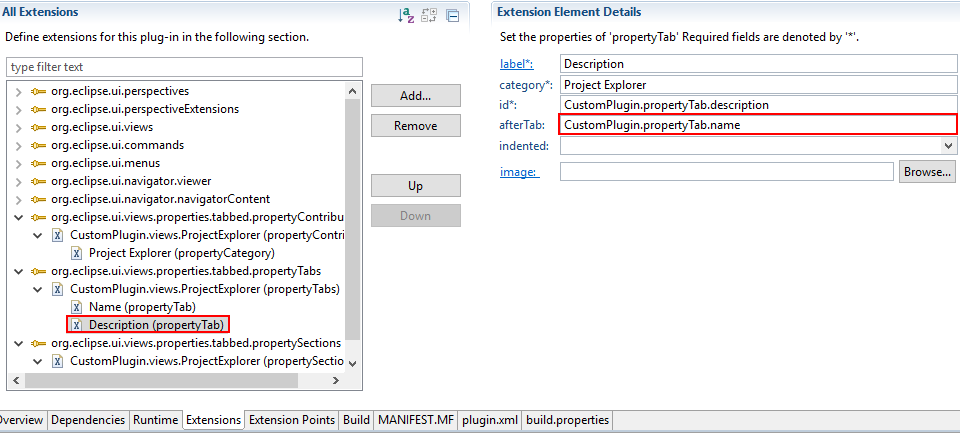
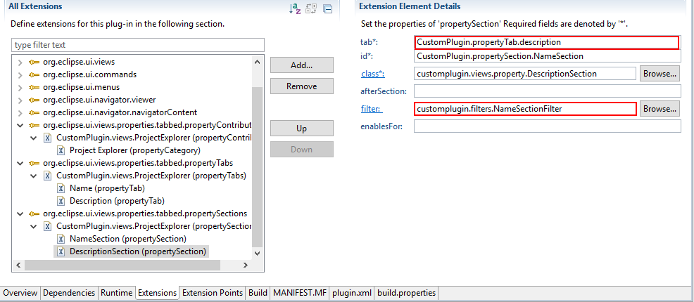
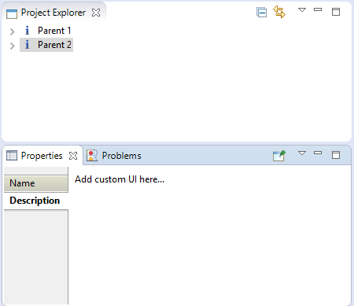

In this section, we will show how to present and update the infomation of nodes in the project explorer on the property view.
1. Add org.eclipse.ui.views.properties.tabbed dependency.
2. Add org.eclipse.ui.views.properties.tabbed.propertyContributor extension
3. Make the project explorer implement the ITabbedPropertySheetPageContributor
import org.eclipse.core.runtime.IAdaptable;
import org.eclipse.ui.navigator.CommonNavigator;
import org.eclipse.ui.views.properties.IPropertySheetPage;
import org.eclipse.ui.views.properties.tabbed.ITabbedPropertySheetPageContributor;
import org.eclipse.ui.views.properties.tabbed.TabbedPropertySheetPage;
import customplugin.views.navigator.data.PropertiesTreeRootData;
public class ProjectExplorer extends CommonNavigator implements ITabbedPropertySheetPageContributor{
public static final String ID = "CustomPlugin.views.ProjectExplorer";
protected IAdaptable getInitialInput(){
return new PropertiesTreeRootData();
}
@Override
public String getContributorId() {
// TODO Auto-generated method stub
return getSite().getId();
}
public Object getAdapter(Class adapter) {
super.getAdapter(adapter);
if (adapter == IPropertySheetPage.class)
return new TabbedPropertySheetPage(this);
return super.getAdapter(adapter);
}
}
4. Add org.eclipse.ui.views.properties.tabbed.propertyTabs extension. This extension is used to manage the tab in the tabbed property view.
Edit the contributorId to CustomPlugin.views.ProjectExplorer. Set the name of the tab to Name, category to Project Explorer defined before, and id to CustomPlugin.propertyTab.name.
5. Add org.eclipse.ui.views.properties.tabbed.propertySections extension. Property section is used to create the UI.
Edit the contributorId to CustomPlugin.views.ProjectExplorer.
Edit the tab to CustomPlugin.propertyTab.name which means this property section is bound to the name tab.
6. To create UI, we need to initialize the class: customplugin.views.property.NameSection.
setInput and refresh method are important. Use the setInput method to get the selected element in the project explorer.
The function is that we can modify the name of a node and the corresponding content will be updated on the project explorer.
import org.eclipse.jface.viewers.ISelection;
import org.eclipse.jface.viewers.IStructuredSelection;
import org.eclipse.swt.SWT;
import org.eclipse.swt.events.ModifyEvent;
import org.eclipse.swt.events.ModifyListener;
import org.eclipse.swt.layout.GridData;
import org.eclipse.swt.layout.GridLayout;
import org.eclipse.swt.widgets.Composite;
import org.eclipse.swt.widgets.Text;
import org.eclipse.ui.IViewPart;
import org.eclipse.ui.IWorkbenchPart;
import org.eclipse.ui.PlatformUI;
import org.eclipse.ui.views.properties.tabbed.AbstractPropertySection;
import org.eclipse.ui.views.properties.tabbed.TabbedPropertySheetPage;
import customplugin.views.ProjectExplorer;
import customplugin.views.navigator.data.PropertiesTreeData;
public class NameSection extends AbstractPropertySection {
private Text nameText;
private PropertiesTreeData data;
private ModifyListener nameListener = new ModifyListener(){
@Override
public void modifyText(ModifyEvent e) {
// TODO Auto-generated method stub
data.setName(nameText.getText());
IViewPart navigator = PlatformUI.getWorkbench().getActiveWorkbenchWindow().getActivePage().findView(ProjectExplorer.ID);//find the navigator
((ProjectExplorer)navigator).getCommonViewer().refresh(data);
}
};
public NameSection() {
// TODO Auto-generated constructor stub
}
public void createControls(Composite parent,TabbedPropertySheetPage aTabbedPropertySheetPage) {
super.createControls(parent, aTabbedPropertySheetPage);
Composite container = getWidgetFactory().createFlatFormComposite(parent);
container.setLayout(new GridLayout(2,false));
GridData nameData = new GridData(SWT.BEGINNING, SWT.FILL, true, true, 1,1);
GridData descriptionData = new GridData(SWT.FILL, SWT.FILL, true, true, 1,1);
nameData.heightHint = 10;
nameData.widthHint = 150;
descriptionData.heightHint = 100;
getWidgetFactory().createCLabel(container, "Name:");
nameText = getWidgetFactory().createText(container, "");
nameText.setLayoutData(nameData);
}
public void setInput(IWorkbenchPart part, ISelection selection) {
super.setInput(part, selection);
if(part instanceof ProjectExplorer){
Object object = ((IStructuredSelection) selection).getFirstElement();
if(object instanceof PropertiesTreeData){
this.data = (PropertiesTreeData)object;
}
}
}
public void refresh() {
nameText.removeModifyListener(nameListener);
nameText.setText(data.getName());
nameText.addModifyListener(nameListener);
}
}
7. Meanwhile, we need to add a filter to this property section which is customplugin.filters.NameSectionFilter.
import org.eclipse.jface.viewers.IFilter;
import customplugin.views.navigator.data.PropertiesTreeData;
public class NameSectionFilter implements IFilter {
@Override
public boolean select(Object toTest) {
// TODO Auto-generated method stub
if(toTest instanceof PropertiesTreeData){
return true;
}
return false;
}
}
8. Result
 9. In the following section, we will present how to add multiple tabs and property sections.
Repeat the step 4 and 5 to add another tab and its property section.
10. Add Description tab and set the afterTab to the id of General tab.
11. Add Description section to the Description tab
12. Create customplugin.views.property.DescriptionSection class
import org.eclipse.swt.SWT;
import org.eclipse.swt.layout.GridData;
import org.eclipse.swt.layout.GridLayout;
import org.eclipse.swt.widgets.Composite;
import org.eclipse.ui.views.properties.tabbed.AbstractPropertySection;
import org.eclipse.ui.views.properties.tabbed.TabbedPropertySheetPage;
public class DescriptionSection extends AbstractPropertySection {
public DescriptionSection() {
// TODO Auto-generated constructor stub
}
public void createControls(Composite parent,TabbedPropertySheetPage aTabbedPropertySheetPage) {
super.createControls(parent, aTabbedPropertySheetPage);
Composite container = getWidgetFactory().createFlatFormComposite(parent);
container.setLayout(new GridLayout(2,false));
GridData nameData = new GridData(SWT.BEGINNING, SWT.FILL, true, true, 1,1);
GridData descriptionData = new GridData(SWT.FILL, SWT.FILL, true, true, 1,1);
nameData.heightHint = 10;
nameData.widthHint = 150;
descriptionData.heightHint = 100;
getWidgetFactory().createCLabel(container, "Add custom UI here...");
}
}
13. Result
